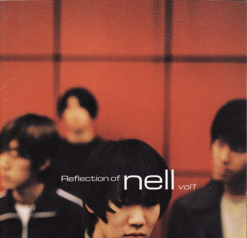

- Reflection of
- Speechless
- Let it Rain
- Walk Through Me
- Healing Process
- Separation Anxiety
- Slip Away
- Newton's Apple
- C
- COLORS IN BLACK
- Moments in between
Reflection of

'Reflection of'는 2001년 1월 19일 발매된 대한민국의 밴드 넬의 인디 1집 앨범이다.
총 10곡이 수록되어있고 런타임은 48분이다. 현재는 절판되어 구매할 수 없는 상태로 대한민국에서 가장 구하기 힘든 앨범 중 하나이다.
수록곡
1. Take Me With
2. 믿어선 안될 말
3. 어차피 그런 거
4. 쓰레기
5. 넌
6. 두번째
7. 길들임
8. 그런기억
9. Eden
10. 4